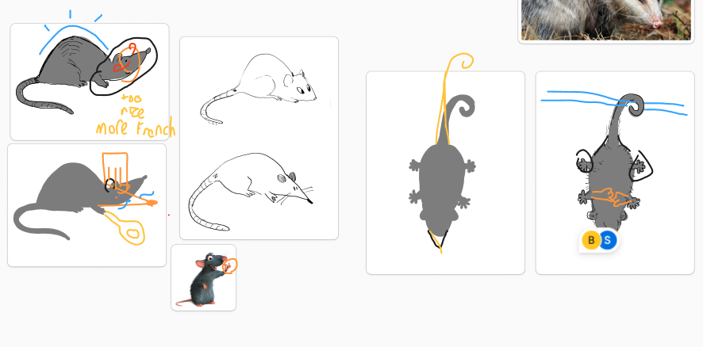
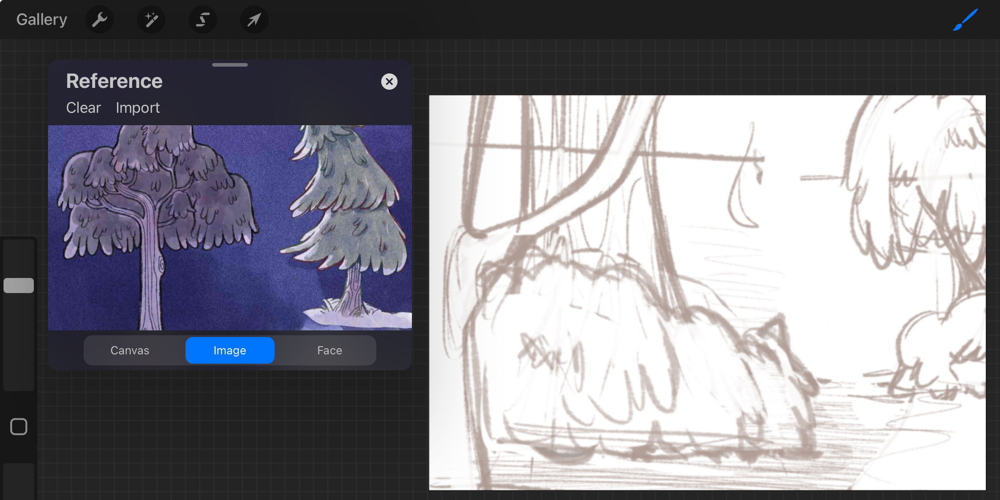
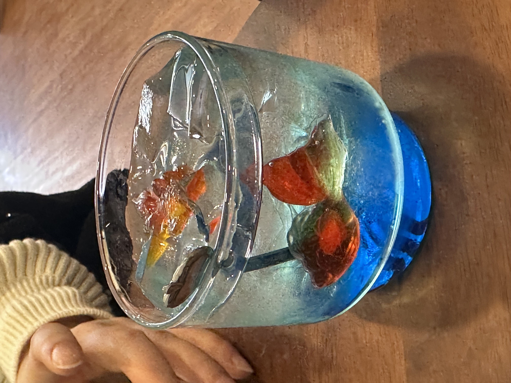
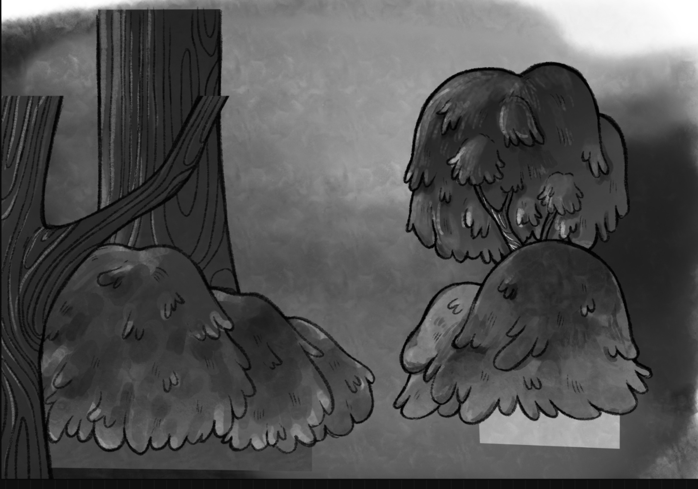
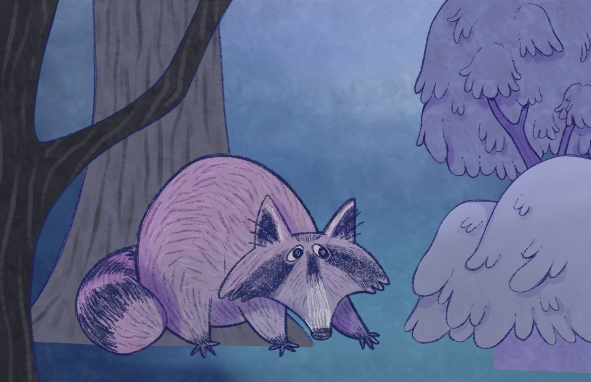
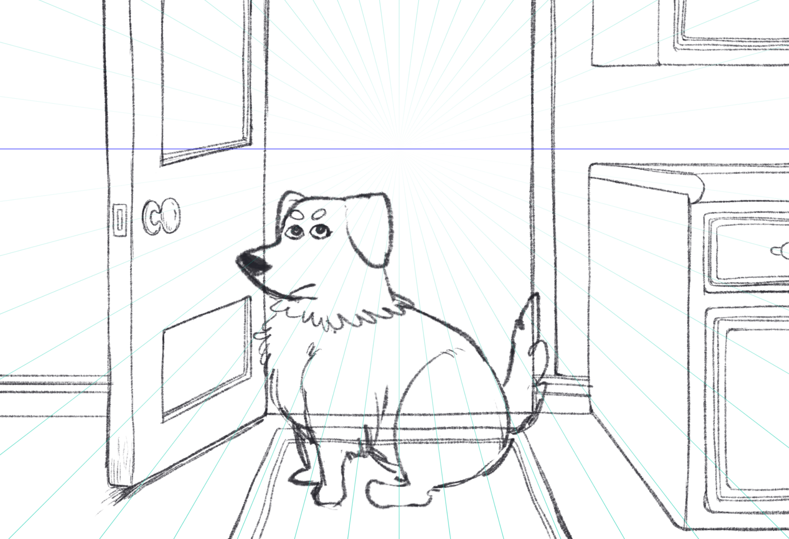

Concept Art
An overview of the work done this week for Beanie’s Backyard!
There’s always so much to do but in terms of managing my time, I find it’s nice to start working on interactive media things during the weekend when I can sit down and fully focus on the task at hand.
Tuesday
We presented our pitch on Tuesday Feb 4 to the class. Afterwards, we planned to meet on Thursday to discuss more about our plan, scope and visual concept. Although we each have our defined roles in the project (e.g., I’m the creative director), we had already decided to split the work evenly. This meant each person was in charge of two animals. I was in charge of the rat and opossum. So on Saturday, I started to work on my assigned animals. (Note: We cancelled Thursday’s meeting because all our tasks were clearly written out on our Notion project management page. If we had any issues, we would contact each other on Discord).
Saturday
We each needed to do research about the animals, gather references and create our own sketches. These were preliminary sketches that could be stylized or realistic. It was necessary to get something out so we could see what we were going to be working with. In terms of the research, we created a Google Docs with tabs for each member. In each document, animal research was done for: their habitat, diet, when do we see them, how to keep them safe, fun facts and sounds they make. While we won’t use all of the information we researched, it was better to have more to work with than to find out we needed more information later on when we start production.
While I was doing research, a few more ideas popped in my head as to how the scrollytelling page could work. I went into our brainstorming Figma and recorded my thoughts. In a dark blue-black environment scene, the user would scroll down and a flashlight glow or firefly would move across the screen. As the user keeps scrolling, it will eventually stop at a bush, porch or tree. The object would start to rustle or glow, prompting the user to click on it. Once clicked, the animal hiding behind it will appear and the scrapbook will come out from the bottom/side and animal facts would be recorded in it. The user can read through the facts, close the book and continue scrolling down. Beanie would not be included in any of the hiding spots. Only once the user reaches the end and uncovers all the animals in their backyard, does Beanie walk into frame, unharmed and back home.
My other idea was to incorporate a mystery element to this scrollytelling page, while still making it a linear narrative in which the user cannot freely roam the screen. I asked myself: why does Beanie run out to the backyard at night in the first place? Maybe his toy was stolen. But by who? And why (maybe leveraging the animal facts, like how ravens and crows like to steal shiny things). One of the backyard animals? This can create a stronger narrative that engages the user to continue scrolling to find out the culprit. In this case, instead of a scrapbook, it would be a notepad, just like a detective’s. At the end of the story, the culprit is revealed and Beanie gets his toy back.
Sunday
We did a lot of collaborating on the Figma on Sunday, Priya added some really neat ideas on top of my scrollytelling ideas! We also continued adding more visual inspiration in hopes of solidifying our concept and visual style early next week.
Environment Sketching and Other Updates
Tuesday
1 hr meeting
We had a meeting after class to delegate tasks. See Thursday’s meeting notes for task divisions. We decided to go for a mystery element in our scrollytelling story, where Beanie’s bandana gets stolen by one of the backyard animals and he runs out of the house to go find it. As the owner, you run out to a. find Beanie and b. collect clues by interacting with the animals through the backyard to call out the culprit. Then, we discussed the concept sketches for the animals each of us created. We want the animals to have distinguishable and distinct shapes/silhouettes so that they stand out against the dark environment and are recognizable. Each person has to go back and rework their sketches to fit this criteria. As the creative director, I will be giving feedback on the animal silhouettes in the coming week.
Wednesday
Completed script
- Used animal facts to create character personalities so that the story would feel more engaging and interactive, each character has their own motives that are separate from the main story
- Animal facts were dispersed through the script as clues for the end scene —guess who the culprit is?
Re-drew concept art for animals
- Silhouettes
- Sketches based off of the silhouettes
Visual style and UI/UX
- Searched around Adobe fonts and my font library to find the right font/type face to use for the title card. We want something playful, light, readable and approachable for the title.
- I added Gambado Sans and Scotch to the list, as well as Chauncy. These are both fonts that have variable diplacement from the baseline. Mainly Gambado, which has a bounced style. The combination of rotational and vertical displacement creates a playful reading experience. Only to be used for the title, of course.

Thursday
1 hr meeting
We had another meeting Thursday afternoon to talk about our progress. I think our group, despite the amount of work we have on our plates is progressing really well. We’re on track and we were able to complete a big chunk of the pre-production tasks. I am super proud of how well this project is progressing! Bonnie created the storyboard and is compiling the content for the pre-production document, Priya created a content inventory and refined the production schedule, also helping me with the script, Stef did the user personas, user walkthrough and notepad mockup, and I was able to finish the script and the environment frames/props.
It took me 2 hours to draw the environments (listed in the script and content inventory) but this was for completion as I am not satisfied with how they came out. The trees and branches were too thin, making them appear scarier. Our vision was to make an environment that was welcoming, friendly and picturebook-like. I have to go back in later next week to make revisions on the shapes. This means making trees thicker, adding more leaves, more stems and other bushy elements to add volume to the space. There was a lot of negative space above because I didn’t know what season we were planning for the interactive scrollytelling. This is something to discuss in our next Thursday meeting. In any case, these environment sketches are still useful at this stage, as they can be used to show the layering and placement of the objects.
After Reading Week
Tuesday
0.5 hr meeting
On Tuesday, we didn’t have class but instead used the time to meet with Alex to chat about our progress. In order to complete the project on time, we were advised to reduce our scope. We currently have 8 animals in the story. Since the animal interactions are all the same, it is repetitive and redundant to code each animal. So we are going to have Priya and Stef code for one scene, which includes one animal interaction, parallax scrolling and notepad interaction/pop-up. For the remaining scenes, we might use After Effects to mock it up. Priya and Stef asked some great questions about dev and coding during the meeting.
After our meeting with Alex, we hopped on a quick call to debrief and figure out what our next steps would be. Priya and Stef will continue to experiment with coding and I will have to complete the environment props and give feedback on the animals. Since I won’t have them done until the end of the weekend, Priya bought up that they could use simple shapes to replace the props before inputting the actual ones. We quickly discussed fonts, making sure that we will be only picking fonts from Google to ensure compatibility across different devices (since we are coding a portion of it).
This weekend, I’m planning on finishing the environment sketches/props to hand off to the dev team. These props will be full images (e.g., a whole tree) instead of cropped so that the dev team can play around with parallax and scrolling movement.
Raccoon Environment Assets
Thursday
I found a TikTok video that contained free brushes that Charwot uses on procreate. I really liked their art style so after discussing with the group, we decided that we would change our scrollytelling’s style into a more lineart heavy style. Initially, we decided to focus on making definable silhouettes but due to time constraints, it was easier to fall back onto a style we were all comfortable with. Using a lineart based style is much more up my alley and my team members too. I created two tree samples to show the group and they liked this style.

Bonnie also showed the group her font layout on the storyboards, that took inspiration from Reuter’s scrollytelling piece, Awash in Grief.
Saturday
I continued creating sample tree environments at San Cafe (wonderful cat-themed, artsy cafe in Kensington market).

While at Prima Cafe (opens late until 3AM and has amazing sandwiches), Bonnie helped me work out the resolution issue with the trees. Even though the trees were drawn on the right resolution and canvas size, when scaled up, they become pixelated. This ruins the aesthetics of the scrollytelling site. To retain the resolution of the environment assets, Bonnie image traced each png asset on Illustrator. We lost the texture of the original painting but it was a sacrifice to maintain resolution. I helped Bonnie by searching up relevant Illustrator tips I saved from Instagram Reels. To put back the grain/noise on the assets, we searched up a greyscale grain and masked it on the assets on Illustrator.
I completed the raccoon scene environment that I have uploaded to our team’s google drive as a psd for Priya and Stef to use for development experiments.
Raccoon Environment Assets cont.
Sunday
I worked on the lineart and coloring for the environment scenes and assets. I wanted to redo the lineart/coloring for the first environment of the raccoon in the forest because it felt too fuzzy to me. I decreased the brush size and increased brush opacity to 100%, going over my lines to make them darker. I re-did my base layers for each asset. The color blocking goes over the lineart so that when it is image traced, the edges are more defined and Illustrator isn’t compensating for the textures in the brush.
One idea I had was to place the lineart layer under the base layer as a clipped layer so that the textured edges do not bleed out. This retains the texture inside of the shape but outside it would be completely smooth, which could help make a neater image trace.
Another change in the coloring style was to use gradient maps. I first colored everything in greyscale to make sure I had a variety of tonal shading. In the first pass, I was color picking and reusing colors for different elements. However, when I converted it to greyscale, I could see why the trees and bushes felt heavy. Everything was dark, low contrast and it lacked an airy, foggy atmosphere. So in my second coloring pass, I made sure to focus on using different greys. Afterwards, I applied gradient maps on each layer. This method allowed me to manipulate colors more freely and less destructively because every element of an asset was on its own layer.


I also finished the sketch and the lineart of the opening scene of Beanie at the backyard door before he escapes. I don’t like his expression at the moment so I’ll need to edit it later this week.

For this week, I’ll need to complete all the environment assets, make sure I image trace them as pngs before handing it off to the dev team, and help out with the design document which is the bulk of the project.